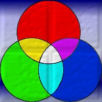
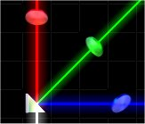
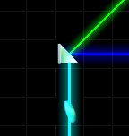

Beams can actually be many colors. The most basic colors are red, green, and blue. All other colors are made up from these 'primary colors' as they are sometimes called. Below are a diagram and a table demonstrating how colors are made.

This diagram shows how colors mix together
CYAN GREEN + BLUE MAGENTA RED + BLUE YELLOW RED + GREEN WHITE RED + GREEN + BLUE
In Aargon some of the pieces provided to you to solve each puzzle can be used to split a color up into it's components or to merge colors together to make new colors.
For example, a prism can be used to split a white beam into three red, green, and blue beams each going in seperate directions.

Here a prism is used to split a white beam into its component colors (red, green, and blue) - Note that the 3 beams are each hitting a coin of the appropriate color in the correctly to solve the level. The white beam is travelling up into the prism. Note that this image would look the same if 3 individual beams of red green and blue were travelling into the prism to make a white beam.
A prism can also be used to mix two beams together. For instance, you could use it to mix red, and green together and make a yellow beam and then use that yellow beam to hit a yellow coin.

Here a prism is used to merge a green beam and blue beam together. The result is a cyan beam which is being used to hit a cyan coin. The green and blue beams are travelling down and left into the prism.
This concept can be difficult at first. We recommend you play the tutorial levels to get used to how colors are split and merged.